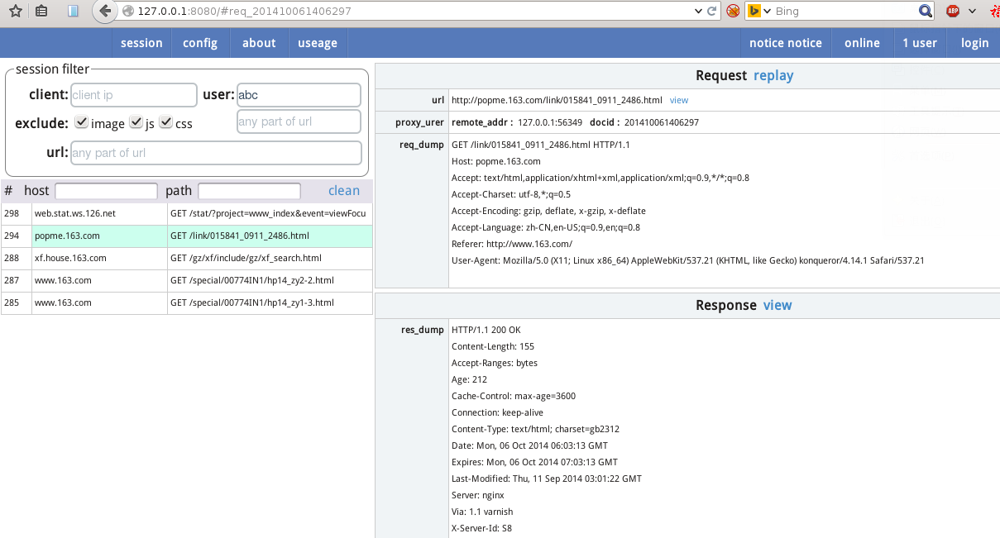
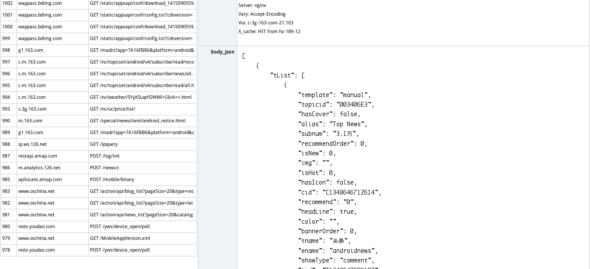

Introduction
HTTP protocol analysis tool.
Based on BS architecture,written by golang.
Useage
1.Client（eg:phone）
set wifi http proxy:
proxy host ： xxx.xxx.xxx.xxx
proxy port ： 8123
2.Server:user interface
- visit Session List Page to view all the http request through this proxy.
- in the session filter form, all text input can use| to enter multiple conditions.
- eg user:,it mean user is a or b.
- you can use replay to replay a request.
3.Modify Requests
you can modify http request.GET、POST paramas and http headers.
req object has these attributes(url=http://www.example.com/album/list?cid=126)：
schema : http
host : www.example.com
port : 80
path : /album/list
get: {cid:[123]}
post: {}
username :
password :
method: GET
form_get : {add:function(k,v){},set:function(k,v){},get:function(k){},len:function(){}}
form_post : {add:function(k,v){},set:function(k,v){},get:function(k){},len:function(){}}
host_addr: #the real host you wish，eg 127.0.0.1:3218
use javascript to achieve it.
function rewrite(req){
//you code start
if(req.host=="www.baidu.com"){
req.host="www.163.com"
req.host_addr="127.0.0.0:81" // send req to 127.0.0.1:81
form_get.add("a","a")
//form_post.set("d","a")
}
// you code end
return req
}more code demo:
if(req.host=="www.baidu.com"){
req.host="www.163.com"
req.host_addr="127.0.0.0:81" // send req to 127.0.0.1:81
form_get.add("a","a")
//form_post.set("d","a")
}
//demo 2
if(req.host=="www.hao123.com"){
req.url="http://zhida.baidu.com/"
}
//demo 3
if(req.host=="www.hao123.com"){
use_file("index.htm") //use the static file in dir "file"
}4.Modify Hosts
host conf:
#all port news.baidu.com 127.0.0.1 #only 81 port match news.baidu.com:81 127.0.0.1:82 news.163.com 127.0.0.1:8080
screenshot :index page

